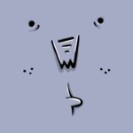

Genialogick une affaire de famille (une bien belle brochette d'abrutis)
Les suspects inhabituels
-
Averell -
Barnaby -
Djenaye -
 Dowenn -
Harpo -
Gordon Blue -
Kurtis -
Onil -
Peyton
Mais qui sont-ils donc, ces cons ?
En fait, personne ne le sait.
Encore un mystère provenant des profondeurs insondables de Seraing.